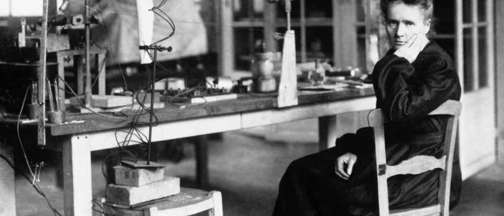

" De la sana educación de los jóvenes dependen la felicidad de las naciones", San Juan Bosco
Juan Bosco nace el 16 de agosto de 1815 en I Becchi, un caserío cerca de Turín, Italia. La pobreza y la orfandad marcarán su infancia campesina, pero con la ayuda de personas muy concretas descubre la paternidad de un Dios que lo sostiene y acompaña en lo cotidiano. Desde chico siente el llamado al sacerdocio. Juan logra hacer realidad su deseo y continúa sus estudios al tiempo que trabaja en diferentes oficios: dando lecciones particulares, siendo mozo de café y aprendiz de sastre, entre otros. En 1842, ya ordenado sacerdote, Juan se encuentra con los muchachos que pueblan la cárcel de la ciudad de Turín. Impactado por esta experiencia comienza a recorrer las calles de esa ciudad, descubriendo el rostro de tantos chicos explotados por sus patrones y abandonados. Desde su propia historia de privaciones, y entendiendo siempre a Dios como un Padre bueno, Juan dará una respuesta concreta a esa juventud pobre, abandonada y en peligro. Será conocido entonces como Don Bosco. Y su genial creación, el oratorio, será para los jóvenes casa que recibe con cariño, patio para encontrarse con amigos, escuela que prepara para la vida y parroquia para conocer a Jesús. Desde los talleres y las aulas de Valdocco, el barrio de Turín, que vio nacer su obra, el oratorio se expande primero a Francia y España, para luego cruzar el océano y llegar a América. Juan muere el 31 de enero de 1888 en Turín, Italia. A su muerte, más de mil salesianos vivían en 57 casas distribuidas en ocho países. El 1 de abril de 1934, el papa Pío X lo declara santo. Y en 1988, San Juan Pablo II le dió el título de "Padre, Maestro y Amigo de la juventudes".
"Marie Curie, Premio Nobel de Física 1903",– Química 1911
Marie Curie fue la primera mujer en recibir el premio Nobel en Física y obtuvo uno más en Química. GETTY \ IMAGES.
Maria Salomea Skłodowska-Curie, conocida como Marie Curie, nació el 7 de noviembre de 1867 en Varsovia, Polonia. Fue una física, matemática y
química pionera en el campo de la radiactividad. Marie no solamente fue la primera mujer, sino que la primera persona en recibir dos Premios
Nobel en distintas especialidades: Física (1903) y Química (1911), y la primera mujer en hacer clases en la Universidad de París.
Marie se casó con el científico Pierre Curie y fue madre de quien recibiría más adelante también un Premio Nobel en Química, Irène Joliot-Curie.
Motivada por el reciente descubrimiento de Antoine Henri Becquerel, que demostró que las sales de uranio emitían rayos de naturaleza
desconocida, sin la necesidad de ser expuestas a la luz, Marie Curie investigó más allá este tema y descubrió que los compuestos formados
por el torio también emitían rayos de forma espontánea. A este fenómeno le llamaron radioactividad.